Code
import os,sys
import numpy as np
import matplotlib.pyplot as plt
import pandas as pd
import json
import pickle as pkl
import subprocess
import pyliftover
import seaborn as sns
import seaborn_image as isns
from PIL import ImageSaideep Gona
April 22, 2024
Having developed a repo to automatically train EnPACT models and having run on a series of peak-based epigenetic marks, here I collect the results of personalized prediction accuracy and analyze them.
Analysis shows that relative to gene expression, epigenetic marks are much better predicted by EnPACT approach, boasting much higher rates of “positive” prediction correlations across individuals. Notably, in peaks which are well-predicted with standard linear expression models, there is a kind of bimodal prediction distribution with accuracy for some peaks correlating well with standard predictors, while the others much more closely resemble null correlation distribution. In genes which are poorly predicted by standard linear models, EnPACT models show some enrichment over the null, with the amount varying by mark.
#TODO Internal CV across all genes for PredictDB - QQplot #TODO R2 scatterplots #TODO Also plot internal cv for non-predictDB genes #TODO AAdd permuted null
path_to_config_template = "/beagle3/haky/users/saideep/github_repos/Con-EnPACT/example_json/example_config_with_twas.json"
path_to_run_template = "/beagle3/haky/users/saideep/github_repos/Con-EnPACT/run_training.sbatch"
path_to_project_dir = "/beagle3/haky/users/saideep/projects/Con_EnPACT/models"
path_to_count_table = "/beagle3/haky/users/saideep/projects/aracena_modeling/Inputs/normalized_peak_data/"
path_to_annotations = "/beagle3/haky/users/saideep/projects/aracena_modeling/Inputs/annotations/"
optimal_window_sizes = {
"H3K27ac":8,
"H3K27me3":64,
"H3K4me1":32,
"H3K4me3":8,
"ATAC":8
}
husl5 = sns.color_palette("husl", 5)
color_mods = {
"H3K27ac":husl5[0],
"H3K27me3":husl5[1],
"H3K4me1":husl5[2],
"H3K4me3":husl5[3],
"ATAC":husl5[4]
}
color_palette_json_path = "/beagle3/haky/users/saideep/github_repos/Con-EnPACT/color_palettes/color_palette.json"
color_palette = json.load(open(color_palette_json_path))for modality in optimal_window_sizes.keys():
for context in ["Flu","NI"]:
cur_window_size = optimal_window_sizes[modality]
cur_proj_dir = os.path.join(path_to_project_dir,context+"_"+modality+"_ws"+str(cur_window_size))
cur_plot_dir = os.path.join(cur_proj_dir,"intermediates","personalized_prediction","personalized_prediction_accuracy","plots")
print("************************************************************************************************")
print("Modality: ",modality)
print("Context: ",context)
print("************************************************************************************************")
cur_images_suffixes = [
"EnPACT_PredictDB_cv_pearson_correlation_plot_kde.png",
"EnPACT_PredictDB_cv_pearson_abscorrelation_plot_kde.png",
"PredictDB_cv_qqplot_pearsonR2.png",
"EnPACT_qqplot_pearsonR2.png",
"EnPACT_nonpd_qqplot_pearsonR2.png",
"EnPACT_PredictDB_cv_pearsonR_hist.png"
]
cur_images_paths = [os.path.join(cur_plot_dir,cur_image) for cur_image in cur_images_suffixes]
all_images = True
for ci in cur_images_paths:
if not os.path.exists(ci):
print("Missing: ",ci)
all_images = False
if not all_images:
continue
cur_images = [np.asarray(Image.open(ci)) for ci in cur_images_paths]
imgrid = isns.ImageGrid(cur_images, col_wrap=2, cbar=False, height=4.5)
imgrid.fig.suptitle(context+"_"+modality+"_ws"+str(cur_window_size), fontsize=16)
plt.show()
plt.clf()
************************************************************************************************
Modality: H3K27ac
Context: Flu
************************************************************************************************
************************************************************************************************
Modality: H3K27ac
Context: NI
************************************************************************************************
Missing: /beagle3/haky/users/saideep/projects/Con_EnPACT/models/NI_H3K27ac_ws8/intermediates/personalized_prediction/personalized_prediction_accuracy/plots/EnPACT_PredictDB_cv_pearson_correlation_plot_kde.png
Missing: /beagle3/haky/users/saideep/projects/Con_EnPACT/models/NI_H3K27ac_ws8/intermediates/personalized_prediction/personalized_prediction_accuracy/plots/EnPACT_PredictDB_cv_pearson_abscorrelation_plot_kde.png
Missing: /beagle3/haky/users/saideep/projects/Con_EnPACT/models/NI_H3K27ac_ws8/intermediates/personalized_prediction/personalized_prediction_accuracy/plots/PredictDB_cv_qqplot_pearsonR2.png
Missing: /beagle3/haky/users/saideep/projects/Con_EnPACT/models/NI_H3K27ac_ws8/intermediates/personalized_prediction/personalized_prediction_accuracy/plots/EnPACT_qqplot_pearsonR2.png
Missing: /beagle3/haky/users/saideep/projects/Con_EnPACT/models/NI_H3K27ac_ws8/intermediates/personalized_prediction/personalized_prediction_accuracy/plots/EnPACT_nonpd_qqplot_pearsonR2.png
Missing: /beagle3/haky/users/saideep/projects/Con_EnPACT/models/NI_H3K27ac_ws8/intermediates/personalized_prediction/personalized_prediction_accuracy/plots/EnPACT_PredictDB_cv_pearsonR_hist.png
************************************************************************************************
Modality: H3K27me3
Context: Flu
************************************************************************************************
************************************************************************************************
Modality: H3K27me3
Context: NI
************************************************************************************************
Missing: /beagle3/haky/users/saideep/projects/Con_EnPACT/models/NI_H3K27me3_ws64/intermediates/personalized_prediction/personalized_prediction_accuracy/plots/EnPACT_PredictDB_cv_pearson_correlation_plot_kde.png
Missing: /beagle3/haky/users/saideep/projects/Con_EnPACT/models/NI_H3K27me3_ws64/intermediates/personalized_prediction/personalized_prediction_accuracy/plots/EnPACT_PredictDB_cv_pearson_abscorrelation_plot_kde.png
Missing: /beagle3/haky/users/saideep/projects/Con_EnPACT/models/NI_H3K27me3_ws64/intermediates/personalized_prediction/personalized_prediction_accuracy/plots/PredictDB_cv_qqplot_pearsonR2.png
Missing: /beagle3/haky/users/saideep/projects/Con_EnPACT/models/NI_H3K27me3_ws64/intermediates/personalized_prediction/personalized_prediction_accuracy/plots/EnPACT_qqplot_pearsonR2.png
Missing: /beagle3/haky/users/saideep/projects/Con_EnPACT/models/NI_H3K27me3_ws64/intermediates/personalized_prediction/personalized_prediction_accuracy/plots/EnPACT_nonpd_qqplot_pearsonR2.png
Missing: /beagle3/haky/users/saideep/projects/Con_EnPACT/models/NI_H3K27me3_ws64/intermediates/personalized_prediction/personalized_prediction_accuracy/plots/EnPACT_PredictDB_cv_pearsonR_hist.png
************************************************************************************************
Modality: H3K4me1
Context: Flu
************************************************************************************************
************************************************************************************************
Modality: H3K4me1
Context: NI
************************************************************************************************
Missing: /beagle3/haky/users/saideep/projects/Con_EnPACT/models/NI_H3K4me1_ws32/intermediates/personalized_prediction/personalized_prediction_accuracy/plots/EnPACT_PredictDB_cv_pearson_correlation_plot_kde.png
Missing: /beagle3/haky/users/saideep/projects/Con_EnPACT/models/NI_H3K4me1_ws32/intermediates/personalized_prediction/personalized_prediction_accuracy/plots/EnPACT_PredictDB_cv_pearson_abscorrelation_plot_kde.png
Missing: /beagle3/haky/users/saideep/projects/Con_EnPACT/models/NI_H3K4me1_ws32/intermediates/personalized_prediction/personalized_prediction_accuracy/plots/PredictDB_cv_qqplot_pearsonR2.png
Missing: /beagle3/haky/users/saideep/projects/Con_EnPACT/models/NI_H3K4me1_ws32/intermediates/personalized_prediction/personalized_prediction_accuracy/plots/EnPACT_qqplot_pearsonR2.png
Missing: /beagle3/haky/users/saideep/projects/Con_EnPACT/models/NI_H3K4me1_ws32/intermediates/personalized_prediction/personalized_prediction_accuracy/plots/EnPACT_nonpd_qqplot_pearsonR2.png
Missing: /beagle3/haky/users/saideep/projects/Con_EnPACT/models/NI_H3K4me1_ws32/intermediates/personalized_prediction/personalized_prediction_accuracy/plots/EnPACT_PredictDB_cv_pearsonR_hist.png
************************************************************************************************
Modality: H3K4me3
Context: Flu
************************************************************************************************
************************************************************************************************
Modality: H3K4me3
Context: NI
************************************************************************************************
Missing: /beagle3/haky/users/saideep/projects/Con_EnPACT/models/NI_H3K4me3_ws8/intermediates/personalized_prediction/personalized_prediction_accuracy/plots/EnPACT_PredictDB_cv_pearson_correlation_plot_kde.png
Missing: /beagle3/haky/users/saideep/projects/Con_EnPACT/models/NI_H3K4me3_ws8/intermediates/personalized_prediction/personalized_prediction_accuracy/plots/EnPACT_PredictDB_cv_pearson_abscorrelation_plot_kde.png
Missing: /beagle3/haky/users/saideep/projects/Con_EnPACT/models/NI_H3K4me3_ws8/intermediates/personalized_prediction/personalized_prediction_accuracy/plots/PredictDB_cv_qqplot_pearsonR2.png
Missing: /beagle3/haky/users/saideep/projects/Con_EnPACT/models/NI_H3K4me3_ws8/intermediates/personalized_prediction/personalized_prediction_accuracy/plots/EnPACT_qqplot_pearsonR2.png
Missing: /beagle3/haky/users/saideep/projects/Con_EnPACT/models/NI_H3K4me3_ws8/intermediates/personalized_prediction/personalized_prediction_accuracy/plots/EnPACT_nonpd_qqplot_pearsonR2.png
Missing: /beagle3/haky/users/saideep/projects/Con_EnPACT/models/NI_H3K4me3_ws8/intermediates/personalized_prediction/personalized_prediction_accuracy/plots/EnPACT_PredictDB_cv_pearsonR_hist.png
************************************************************************************************
Modality: ATAC
Context: Flu
************************************************************************************************
************************************************************************************************
Modality: ATAC
Context: NI
************************************************************************************************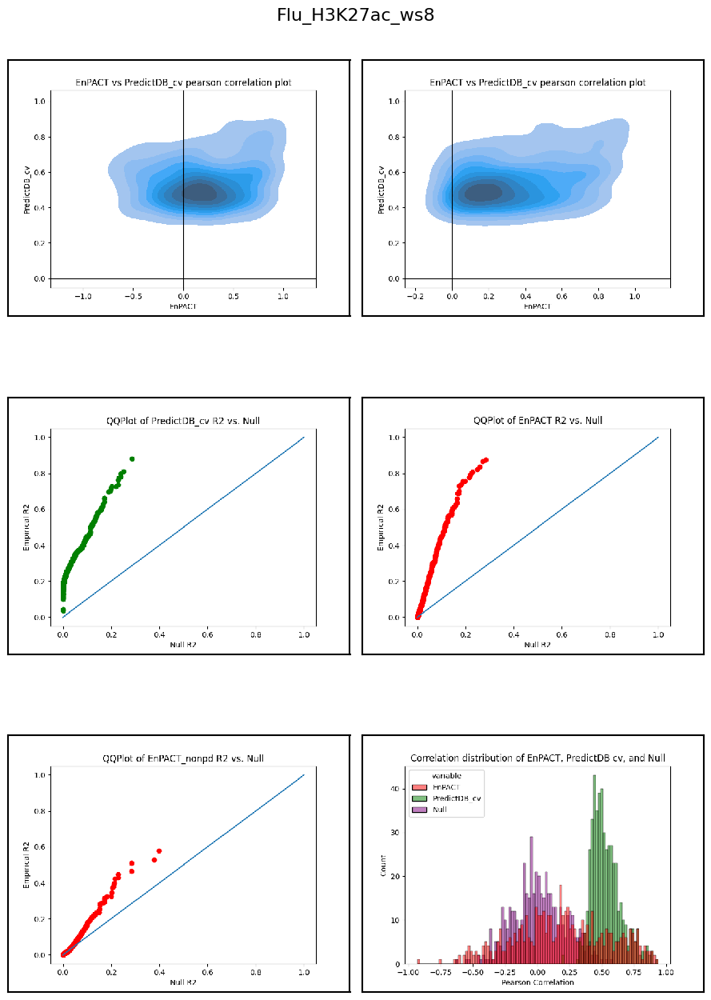
<Figure size 640x480 with 0 Axes>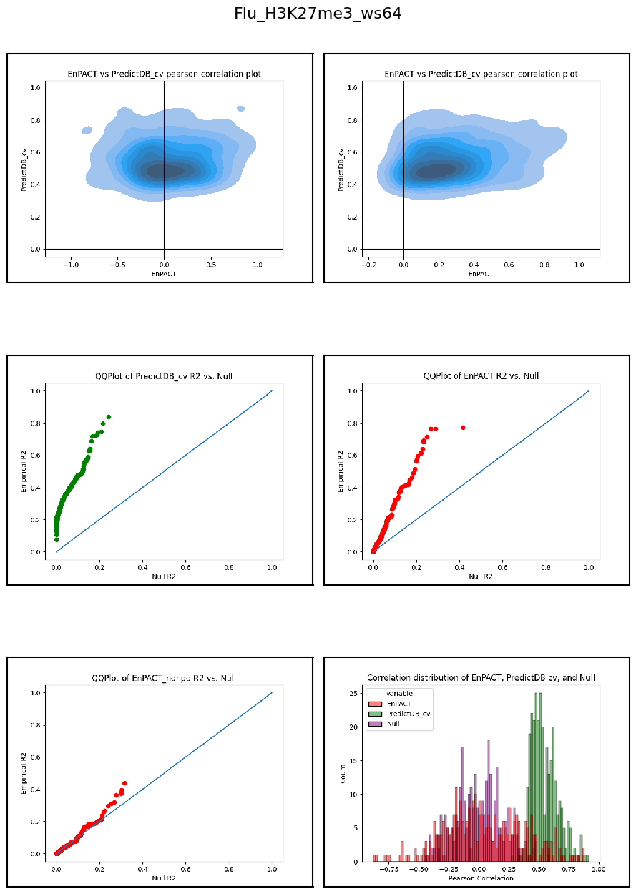
<Figure size 640x480 with 0 Axes>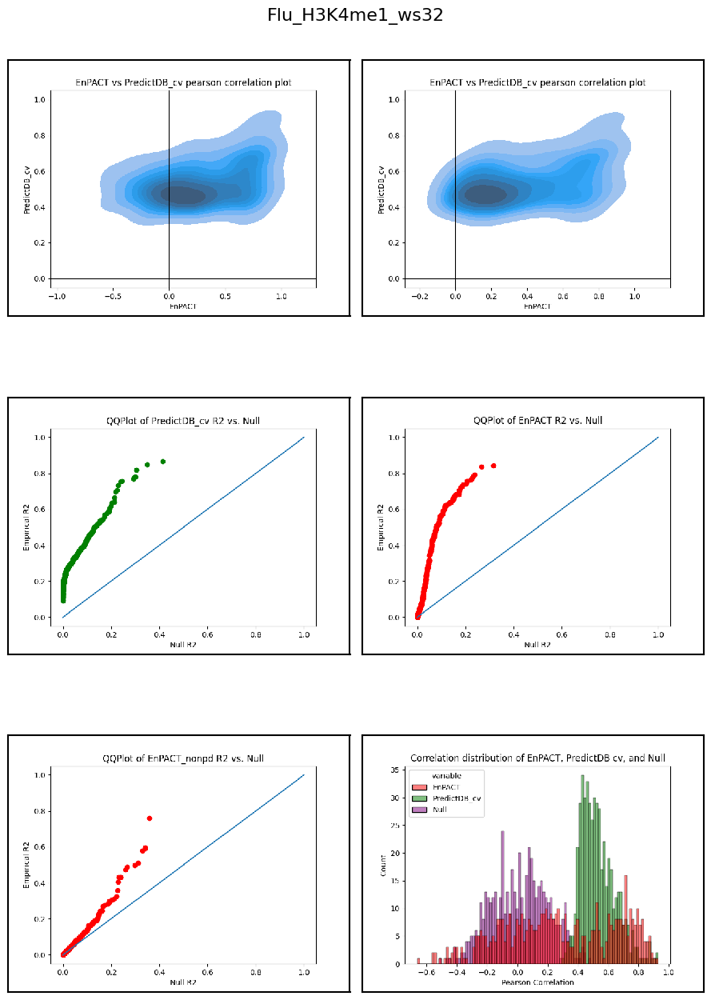
<Figure size 640x480 with 0 Axes>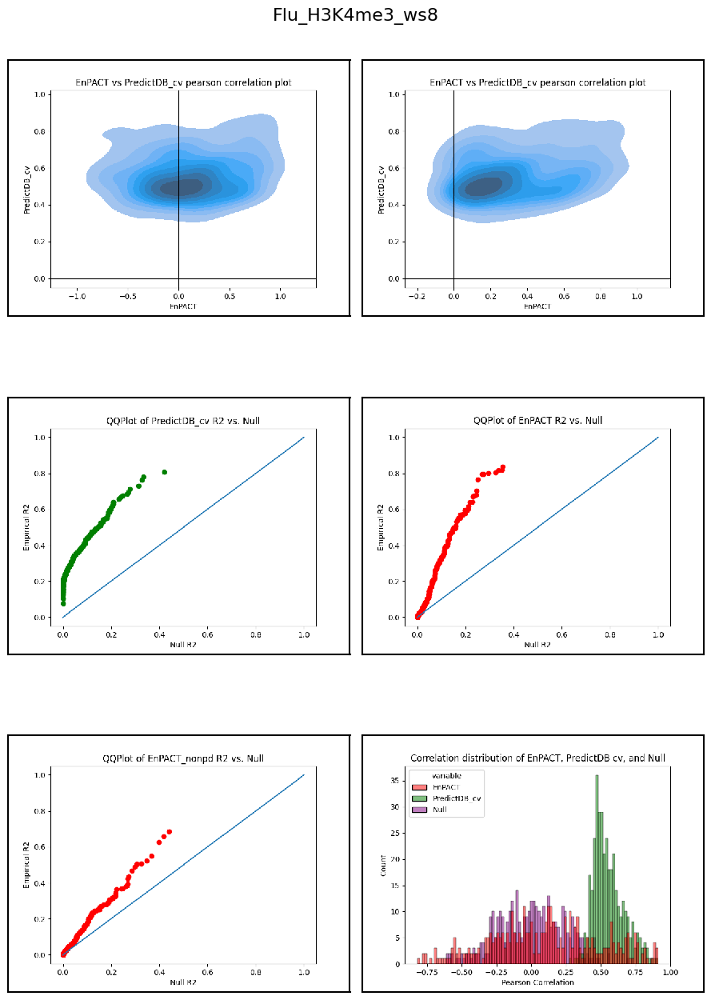
<Figure size 640x480 with 0 Axes>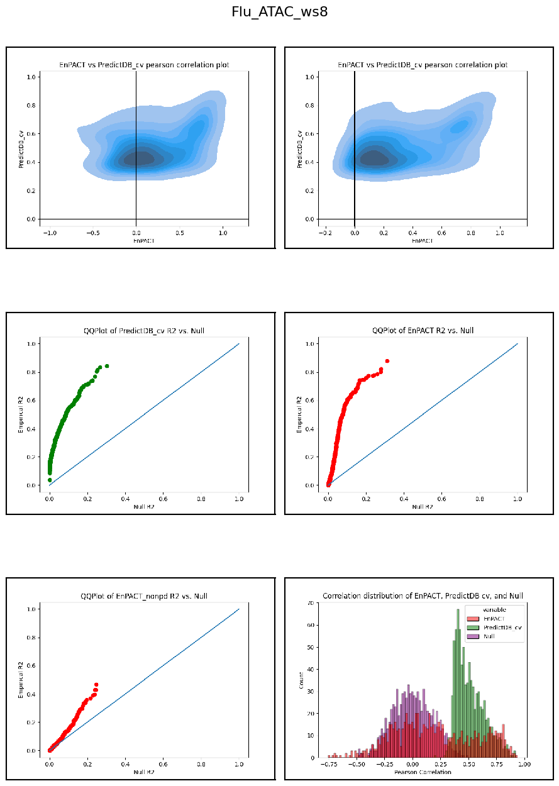
<Figure size 640x480 with 0 Axes>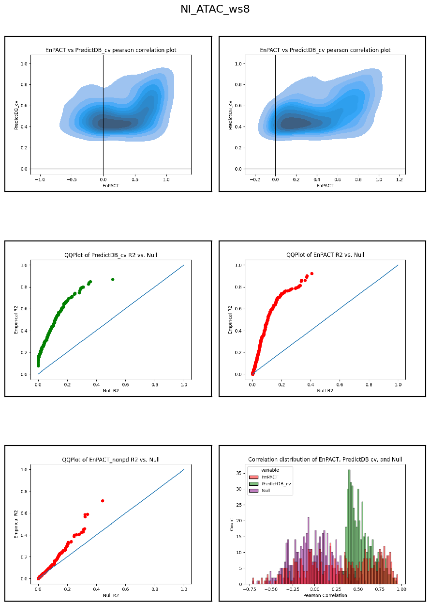
<Figure size 640x480 with 0 Axes>
correlations_summary_dict = {
"Condition":[],
"Modality":[],
"Correlation Set":[],
"Mean Correlation":[],
"Correlation Variance":[],
"Correlation SD": [],
"Correlation Type":[],
"Num features":[]
}
all_corrs = []
for modality in optimal_window_sizes.keys():
for context in ["Flu","NI"]:
cur_window_size = optimal_window_sizes[modality]
cur_proj_dir = os.path.join(path_to_project_dir,context+"_"+modality+"_ws"+str(cur_window_size))
pp_analysis_dir = os.path.join(cur_proj_dir,"intermediates","personalized_prediction","personalized_prediction_accuracy")
correlation_set_pkl_path = os.path.join(pp_analysis_dir, "correlation_sets.pkl")
if os.path.exists(correlation_set_pkl_path):
with open(correlation_set_pkl_path,"rb") as f:
correlation_sets_loaded = pkl.load(f)
else:
print("Missing: ",correlation_set_pkl_path)
continue
for cur_set in correlation_sets_loaded.keys():
if cur_set == "PredictDB":
continue
if cur_set == "PredictDB_cv_all":
continue
for corr_type in correlation_sets_loaded[cur_set].keys():
cur_corr_df = pd.DataFrame({
"model_type": cur_set,
"corr":list(correlation_sets_loaded[cur_set][corr_type]),
"corr_type":corr_type,
"modality":modality,
"context":context,
})
all_corrs.append(cur_corr_df)
correlations_summary_dict["Condition"].append(context)
correlations_summary_dict["Modality"].append(modality)
correlations_summary_dict["Correlation Set"].append(cur_set)
correlations_summary_dict["Mean Correlation"].append(np.mean(correlation_sets_loaded[cur_set][corr_type]))
correlations_summary_dict["Correlation Variance"].append(np.var(correlation_sets_loaded[cur_set][corr_type]))
correlations_summary_dict["Correlation SD"].append(np.sqrt(np.var(correlation_sets_loaded[cur_set][corr_type])))
correlations_summary_dict["Correlation Type"].append(corr_type)
correlations_summary_dict["Num features"].append(len(correlation_sets_loaded[cur_set][corr_type]))
correlation_summary_df = pd.DataFrame(correlations_summary_dict)
print(correlation_summary_df.head())
correlation_summary_df["max_err_bar"] = correlation_summary_df["Mean Correlation"] + correlation_summary_df["Correlation SD"]
correlation_summary_df["min_err_bar"] = correlation_summary_df["Mean Correlation"] - correlation_summary_df["Correlation SD"]
correlation_summary_df.to_csv("correlation_summary_df.csv",index=False)
all_corrs_df = pd.concat(all_corrs)
all_corrs_df["abs_corr"] = np.abs(all_corrs_df["corr"])
Missing: /beagle3/haky/users/saideep/projects/Con_EnPACT/models/NI_H3K27ac_ws8/intermediates/personalized_prediction/personalized_prediction_accuracy/correlation_sets.pkl
Missing: /beagle3/haky/users/saideep/projects/Con_EnPACT/models/NI_H3K27me3_ws64/intermediates/personalized_prediction/personalized_prediction_accuracy/correlation_sets.pkl
Missing: /beagle3/haky/users/saideep/projects/Con_EnPACT/models/NI_H3K4me1_ws32/intermediates/personalized_prediction/personalized_prediction_accuracy/correlation_sets.pkl
Missing: /beagle3/haky/users/saideep/projects/Con_EnPACT/models/NI_H3K4me3_ws8/intermediates/personalized_prediction/personalized_prediction_accuracy/correlation_sets.pkl
Condition Modality Correlation Set Mean Correlation Correlation Variance \
0 Flu H3K27ac EnPACT 0.190063 0.134924
1 Flu H3K27ac EnPACT 0.171426 0.118806
2 Flu H3K27ac EnPACT 0.190063 0.134924
3 Flu H3K27ac EnPACT 0.171426 0.118806
4 Flu H3K27ac EnPACT 0.001809 0.036782
Correlation SD Correlation Type Num features
0 0.367320 pearson 499
1 0.344682 spearman 499
2 0.367320 emp_null_pearson 499
3 0.344682 emp_null_spearman 499
4 0.191787 anal_null_pearson 499 print(all_corrs_df.head())
print(all_corrs_df["context"].value_counts())
print(all_corrs_df["modality"].value_counts())
print(all_corrs_df["corr_type"].value_counts())
mean_all_corrs = all_corrs_df.groupby(["context","modality","corr_type"]).mean()
median_all_corrs = all_corrs_df.groupby(["context","modality","corr_type"]).median()
mean_all_corrs.to_csv("/beagle3/haky/users/saideep/github_repos/Daily-Blog-Sai/posts/2024-04-22-analyze_peak_personalized_prediction/mean_all_corrs.csv")
median_all_corrs.to_csv("/beagle3/haky/users/saideep/github_repos/Daily-Blog-Sai/posts/2024-04-22-analyze_peak_personalized_prediction/median_all_corrs.csv") model_type corr corr_type modality context abs_corr
0 EnPACT 0.039334 pearson H3K27ac Flu 0.039334
1 EnPACT 0.423434 pearson H3K27ac Flu 0.423434
2 EnPACT 0.709962 pearson H3K27ac Flu 0.709962
3 EnPACT 0.155284 pearson H3K27ac Flu 0.155284
4 EnPACT -0.005329 pearson H3K27ac Flu 0.005329
Flu 27509
NI 5359
Name: context, dtype: int64
ATAC 14426
H3K4me1 5445
H3K27ac 5389
H3K4me3 4225
H3K27me3 3383
Name: modality, dtype: int64
pearson 8988
spearman 5970
emp_null_pearson 5970
emp_null_spearman 5970
anal_null_pearson 5970
Name: corr_type, dtype: int64g = sns.FacetGrid(all_corrs_df, row="model_type", col="corr_type", height=4, aspect=1.5, margin_titles=True)
g.map_dataframe(sns.violinplot, x="modality",y="corr",hue="context", palette={"Flu":"#FF0000","NI":"#0000FF"})
for ax in g.axes.flatten():
ax.tick_params(labelbottom=True)
plt.show()
plt.clf()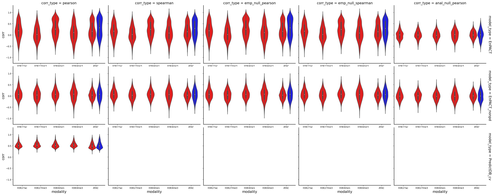
<Figure size 640x480 with 0 Axes>all_corrs_df_Flu = all_corrs_df[all_corrs_df["context"]=="Flu"]
hue_col = []
for index, row in all_corrs_df_Flu.iterrows():
hue_col.append(row["model_type"]+"_"+row["corr_type"])
all_corrs_df_Flu["hue_col"] = hue_col
print(all_corrs_df_Flu["hue_col"].value_counts())
color_palette_models = {
"EnPACT_pearson":"red",
"EnPACT_anal_null_pearson":"white",
"EnPACT_nonpd_pearson":"lightcoral",
"EnPACT_nonpd_emp_null_pearson":"white",
"PredictDB_cv_pearson":"green",
"EnPACT":"red",
"null":"white"
}
all_corrs_df_Flu_for_plot = all_corrs_df_Flu[all_corrs_df_Flu["hue_col"].isin(color_palette_models.keys())]
print(all_corrs_df_Flu_for_plot["hue_col"].value_counts())EnPACT_pearson 2519
EnPACT_spearman 2519
EnPACT_emp_null_pearson 2519
EnPACT_emp_null_spearman 2519
EnPACT_anal_null_pearson 2519
PredictDB_cv_pearson 2519
EnPACT_nonpd_pearson 2479
EnPACT_nonpd_spearman 2479
EnPACT_nonpd_emp_null_pearson 2479
EnPACT_nonpd_emp_null_spearman 2479
EnPACT_nonpd_anal_null_pearson 2479
Name: hue_col, dtype: int64
EnPACT_pearson 2519
EnPACT_anal_null_pearson 2519
PredictDB_cv_pearson 2519
EnPACT_nonpd_pearson 2479
EnPACT_nonpd_emp_null_pearson 2479
Name: hue_col, dtype: int64The RNAseq data was analyzed prior in slightly different manner. Let’s add it to our current dataset:
path_to_predictdb_rnaseq_flu_results = "/beagle3/haky/users/saideep/projects/aracena_modeling/linearization/standard_predictDB_aracena_Flu_singlenested_3_7_lnormFALSE_beforeFALSE_scale1_sourcekallisto/filtered_db/predict_db_Model_training_filtered.db"
import sqlite3
def read_from_sqlite(db, query):
conn = sqlite3.connect(db)
c = conn.cursor()
c.execute(query)
return c.fetchall()
query = "SELECT gene FROM extra"
features = read_from_sqlite(path_to_predictdb_rnaseq_flu_results, query)
features_list = [x[0] for x in features]
| Unnamed: 0 | 0 | |
|---|---|---|
| 0 | ENSG00000169299 | 0.359111 |
| 1 | ENSG00000257923 | 0.049801 |
| 2 | ENSG00000103415 | 0.138249 |
| 3 | ENSG00000266967 | -0.336405 |
| 4 | ENSG00000184056 | -0.454364 |
| ... | ... | ... |
| 8802 | ENSG00000138756 | 0.076117 |
| 8803 | ENSG00000174437 | -0.383792 |
| 8804 | ENSG00000051108 | 0.084407 |
| 8805 | ENSG00000256683 | 0.136676 |
| 8806 | ENSG00000010017 | 0.147759 |
8807 rows × 2 columns
rnaseq_corrs.columns = ["gene","corr"]
rnaseq_corrs["model_type"] = "EnPACT"
rnaseq_corrs["corr_type"] = "pearson"
rnaseq_corrs["modality"] = "RNAseq"
rnaseq_corrs["context"] = "Flu"
rnaseq_corrs["abs_corr"] = np.abs(rnaseq_corrs["corr"])
rnaseq_corrs["hue_col"] = ["EnPACT_pearson" if gene in features_list else "EnPACT_nonpd_pearson" for gene in rnaseq_corrs["gene"]]
nn=30
null_corrvec = np.tanh(np.random.normal(size=rnaseq_corrs.shape[0])/np.sqrt(nn-3))
null_corrs = pd.DataFrame(
{
"corr":null_corrvec,
"model_type":"EnPACT",
"corr_type":"pearson",
"modality":"RNAseq",
"context":"Flu",
"abs_corr":np.abs(null_corrvec),
"hue_col":"EnPACT_anal_null_pearson"
}
)
EnPACT_pearson 2519
EnPACT_anal_null_pearson 2519
PredictDB_cv_pearson 2519
EnPACT_nonpd_pearson 2479
EnPACT_nonpd_emp_null_pearson 2479
Name: hue_col, dtype: int64
EnPACT_nonpd_pearson 7695
EnPACT_pearson 1112
Name: hue_col, dtype: int64
EnPACT_anal_null_pearson 8807
Name: hue_col, dtype: int64print(list(all_corrs_df_Flu_for_plot.columns))
print(list(rnaseq_corrs.columns))
rnaseq_corrs_for_stack = rnaseq_corrs.copy()
rnaseq_corrs_for_stack.drop(columns=["gene"],inplace=True)
print(list(rnaseq_corrs_for_stack.columns))
rnaseq_corrs_for_stack = rnaseq_corrs_for_stack[list(all_corrs_df_Flu_for_plot.columns)]
rnaseq_null_corrs_for_stack = null_corrs[list(all_corrs_df_Flu_for_plot.columns)]
print(list(all_corrs_df_Flu_for_plot.columns))
print(list(rnaseq_corrs_for_stack.columns))
all_corrs_df_Flu_for_plot_wrnaseq = pd.concat([all_corrs_df_Flu_for_plot,rnaseq_corrs_for_stack, rnaseq_null_corrs_for_stack])
print(all_corrs_df_Flu_for_plot_wrnaseq.shape)
all_corrs_df_Flu_for_plot_wrnaseq = all_corrs_df_Flu_for_plot_wrnaseq[all_corrs_df_Flu_for_plot_wrnaseq["hue_col"].isin(["EnPACT_pearson", "EnPACT_nonpd_pearson", "EnPACT_anal_null_pearson"])]
print(all_corrs_df_Flu_for_plot_wrnaseq["hue_col"].value_counts())
all_corrs_df_Flu_for_plot_wrnaseq["is_null"] = ["null" if x == "EnPACT_anal_null_pearson" else "EnPACT" for x in all_corrs_df_Flu_for_plot_wrnaseq["hue_col"]]['model_type', 'corr', 'corr_type', 'modality', 'context', 'abs_corr', 'hue_col']
['gene', 'corr', 'model_type', 'corr_type', 'modality', 'context', 'abs_corr', 'hue_col']
['corr', 'model_type', 'corr_type', 'modality', 'context', 'abs_corr', 'hue_col']
['model_type', 'corr', 'corr_type', 'modality', 'context', 'abs_corr', 'hue_col']
['model_type', 'corr', 'corr_type', 'modality', 'context', 'abs_corr', 'hue_col']
(30129, 7)
EnPACT_anal_null_pearson 11326
EnPACT_nonpd_pearson 10174
EnPACT_pearson 3631
Name: hue_col, dtype: int64EnPACT_anal_null_pearson 11326
EnPACT_nonpd_pearson 10174
EnPACT_pearson 3631
Name: hue_col, dtype: int64
plt.figure(figsize=(14,6))
plt.grid()
g = sns.violinplot(x="modality",y="corr",hue="hue_col",data=all_corrs_df_Flu_for_plot_wrnaseq,
palette=color_palette_models, height=30, aspect = 4,
order = ["RNAseq","ATAC","H3K27ac","H3K27me3","H3K4me1","H3K4me3"],
hue_order=["EnPACT_pearson", "EnPACT_nonpd_pearson", "EnPACT_anal_null_pearson"])
g.legend(loc='center left', bbox_to_anchor=(1, 0.5))
plt.show()
plt.clf()
plt.figure(figsize=(14,6))
plt.grid()
g = sns.violinplot(x="modality",y="corr",hue="is_null",data=all_corrs_df_Flu_for_plot_wrnaseq,
palette=color_palette_models, height=30, aspect = 4,
order = ["RNAseq","ATAC","H3K27ac","H3K27me3","H3K4me1","H3K4me3"],
hue_order=["EnPACT","null"])
g.legend(loc='center left', bbox_to_anchor=(1, 0.5))
plt.show()
plt.clf()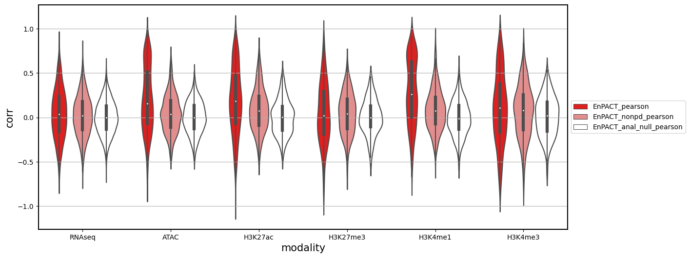
<Figure size 640x480 with 0 Axes>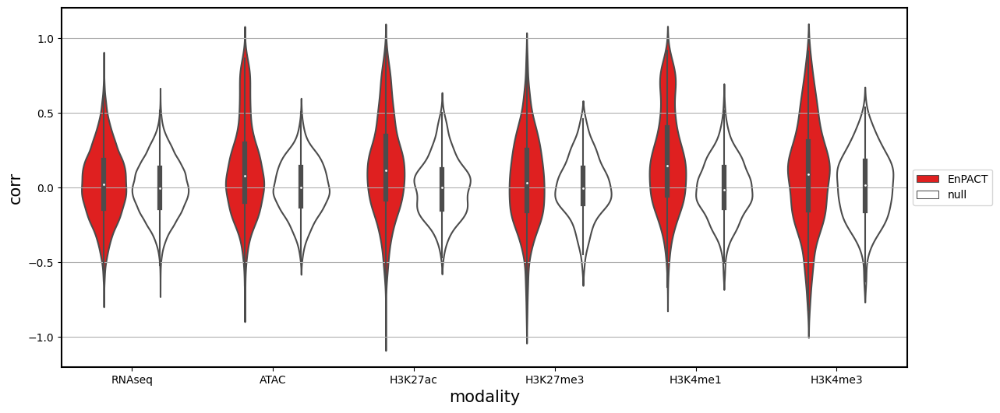
<Figure size 640x480 with 0 Axes>| corr | abs_corr | ||
|---|---|---|---|
| modality | is_null | ||
| ATAC | EnPACT | 0.124901 | 0.253619 |
| null | 0.001953 | 0.144324 | |
| H3K27ac | EnPACT | 0.139213 | 0.269129 |
| null | 0.001809 | 0.155564 | |
| H3K27me3 | EnPACT | 0.046467 | 0.234607 |
| null | 0.004365 | 0.154137 | |
| H3K4me1 | EnPACT | 0.186094 | 0.287789 |
| null | -0.006726 | 0.156578 | |
| H3K4me3 | EnPACT | 0.086590 | 0.283900 |
| null | 0.012693 | 0.182760 | |
| RNAseq | EnPACT | 0.024426 | 0.190559 |
| null | -0.000408 | 0.151141 |
g = sns.FacetGrid(correlation_summary_df, row="Correlation Set", col="Correlation Type", height=4, aspect=1.5, margin_titles=True)
g.map_dataframe(sns.barplot, x="Modality",y="Mean Correlation",hue="Condition", palette={"Flu":"#FF0000","NI":"#0000FF"})
for ax in g.axes.flatten():
ax.tick_params(labelbottom=True)
plt.show()
plt.clf()
g = sns.FacetGrid(correlation_summary_df, row="Correlation Set", col="Correlation Type", height=4, aspect=1.5, margin_titles=True)
g.map_dataframe(sns.barplot, x="Modality",y="Correlation Variance",hue="Condition", palette={"Flu":"#FF0000","NI":"#0000FF"})
for ax in g.axes.flatten():
ax.tick_params(labelbottom=True)
plt.show()
plt.clf()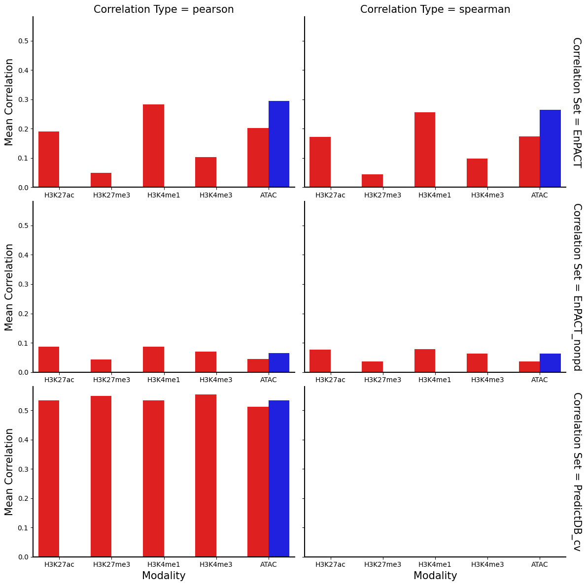
<Figure size 640x480 with 0 Axes>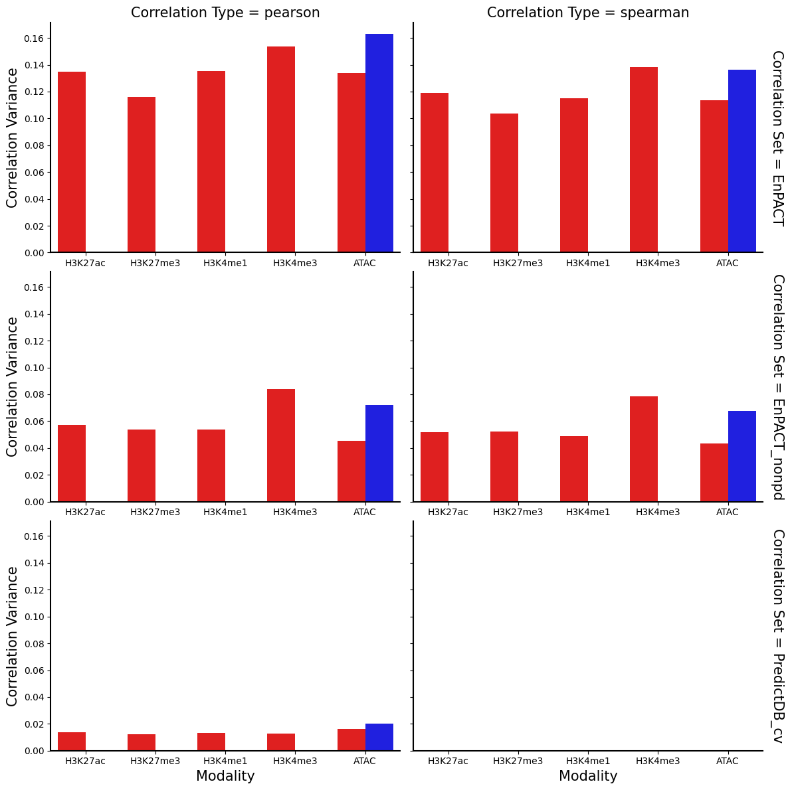
<Figure size 640x480 with 0 Axes># sns.scatterplot(data=correlation_summary_df,x="Mean Correlation",y="Correlation Variance",hue="Correlation Type",style="Condition")
g = sns.FacetGrid(correlation_summary_df, row="Condition", col="Correlation Type", height=4, aspect=1.5, margin_titles=True)
g.map_dataframe(sns.scatterplot, x="Mean Correlation",y="Correlation Variance",hue="Modality",style="Correlation Set", palette=color_mods,
size="Num features",sizes=(100, 200))
for ax in g.axes.flatten():
ax.tick_params(labelbottom=True)
g.add_legend()
plt.show()
plt.clf()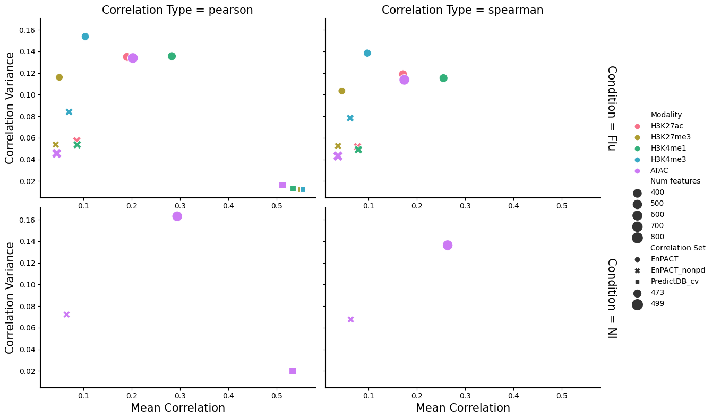
<Figure size 640x480 with 0 Axes>